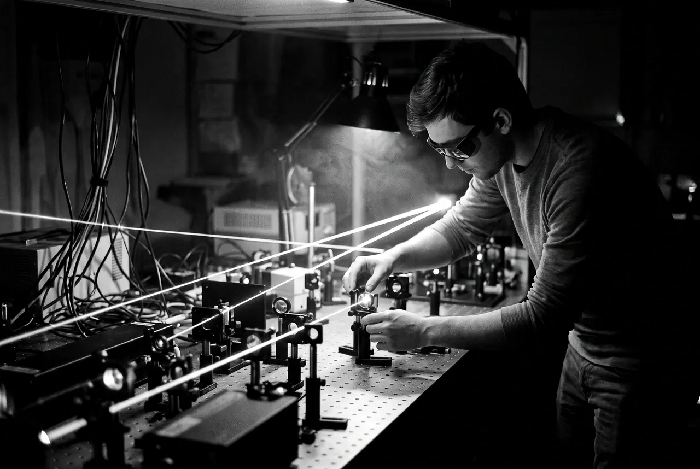
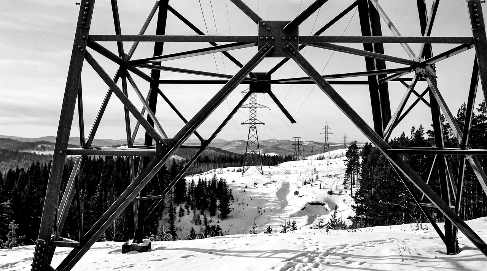
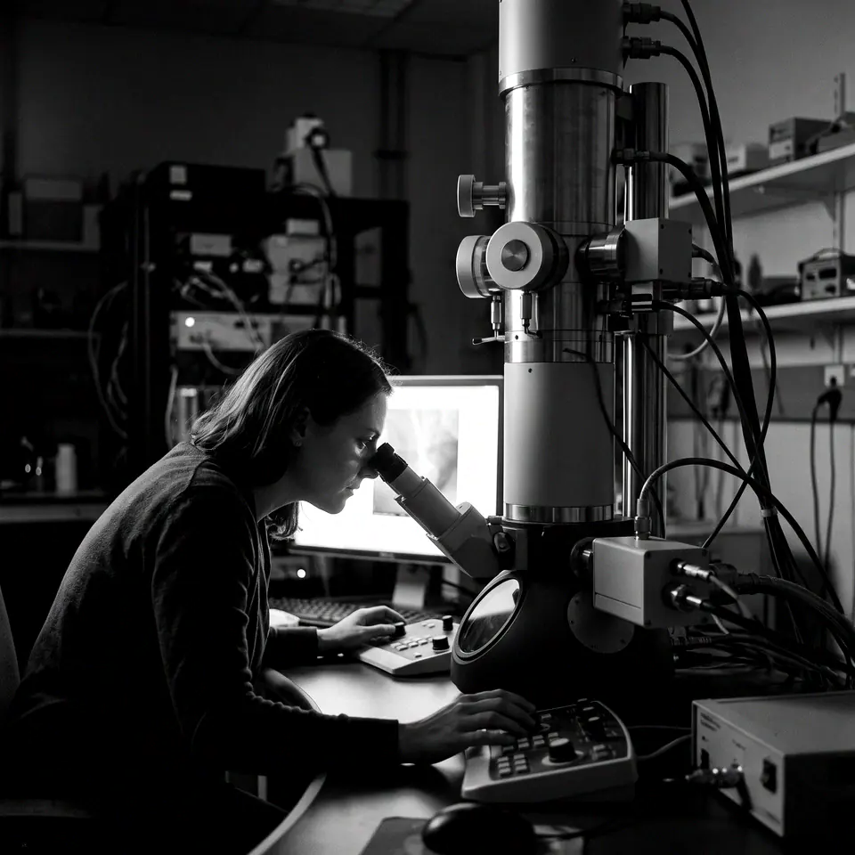
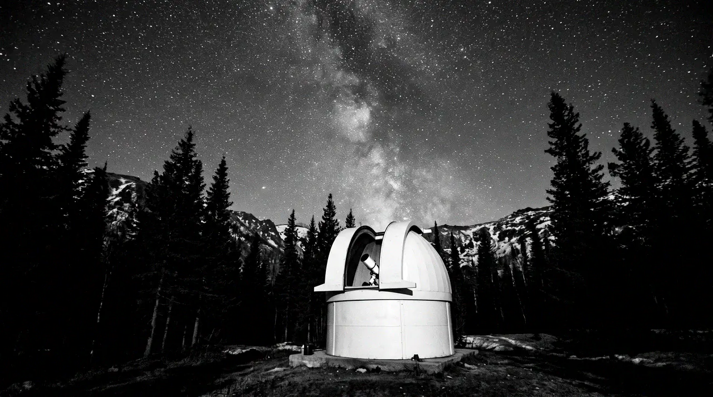
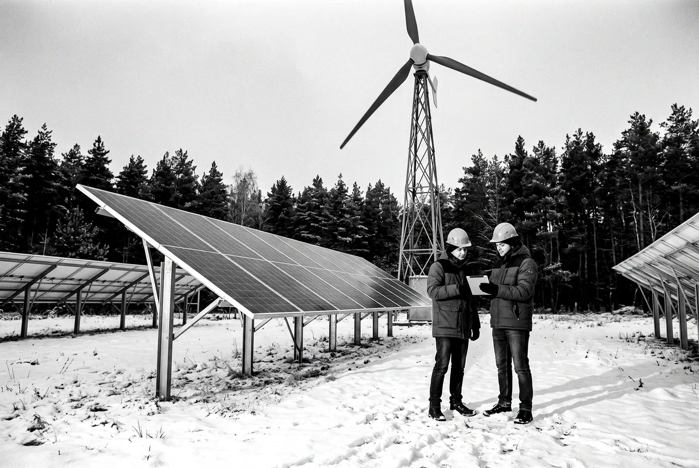

Коуровская астрономическая обсерватория
Обсерватория университета в лесу под Екатеринбургом: телескопы для наблюдений и практики студентов-астрономов.
164 лаборатории, 561 доктор наук и 23 члена Российской академии наук. Ниже — о чём они пишут на этой неделе и как студенту попасть в науку.

164лаборатории с современным оборудованием
561доктор наук среди преподавателей
23члена РАН, действительные и корреспонденты
10+лабораторий ведут ведущие зарубежные учёные





Три места, о которых университет рассказывает в этом месяце.
Обсерватория университета в лесу под Екатеринбургом: телескопы для наблюдений и практики студентов-астрономов.

Новая лаборатория: учёные ищут, как с помощью ИИ управлять энергоснабжением удалённых территорий.
Отделу 45 лет. На юбилейной выставке — книги Татищева и Демидовых.